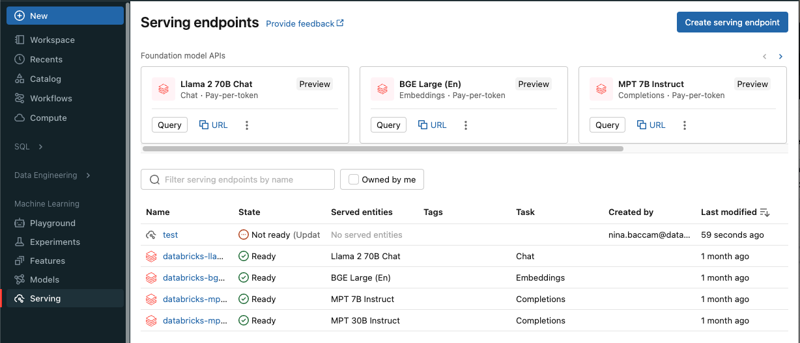
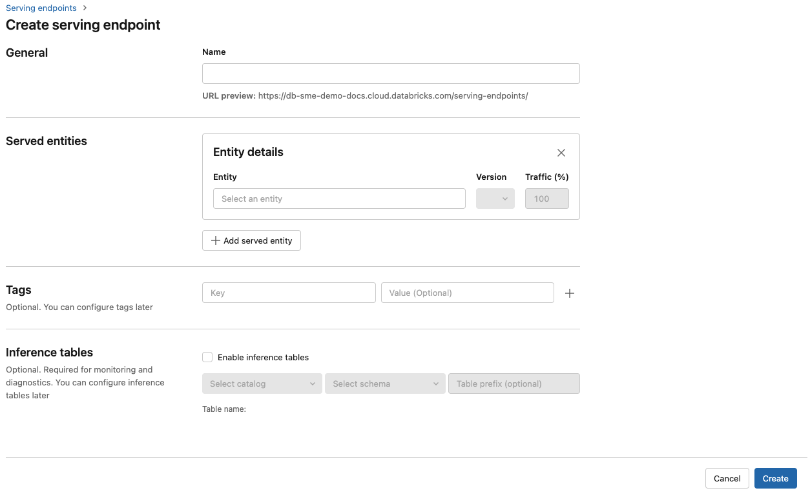

Model serving tutorial
This article provides the basic steps to perform model serving on Databricks for a custom model installed in Unity Catalog or registered in the workspace model registry.
Step 1: Log the model to the model registry
There are different ways to log your model for model serving:
Logging technique |
Description |
|---|---|
Autologging |
This is automatically turned on when you use Databricks Runtime for machine learning. It’s the easiest way but gives you less control. |
Logging using MLflow’s built-in flavors |
You can manually log the model with MLflow’s built-in model flavors. |
Custom logging with |
Use this if you have a custom model or if you need extra steps before or after inference. |
The following example shows how to log your MLflow model using the transformer flavor and specify parameters you need for your model.
with mlflow.start_run():
model_info = mlflow.transformers.log_model(
transformers_model=text_generation_pipeline,
artifact_path="my_sentence_generator",
inference_config=inference_config,
registered_model_name='gpt2',
input_example=input_example,
signature=signature
)
After your model is logged be sure to check that your model is registered in either the MLflow Unity Catalog or Model Registry.
Step 2: Create endpoint using the Serving UI
After your registered model is logged and you are ready to serve it, you can create a model serving endpoint using the Serving UI.
Click Serving in the sidebar to display the Serving UI.
Click Create serving endpoint.
In the Name field, provide a name for your endpoint.
In the Served entities section
Click into the Entity field to open the Select served entity form.
Select the type of model you want to serve. The form dynamically updates based on your selection.
Select which model and model version you want to serve.
Select the percentage of traffic to route to your served model.
Select what size compute to use. You can use CPU or GPU computes for your workloads. Support for model serving on GPU is in Public Preview. See GPU workload types for more information on available GPU computes.
Under Compute Scale-out, select the size of the compute scale out that corresponds with the number of requests this served model can process at the same time. This number should be roughly equal to QPS x model execution time.
Available sizes are Small for 0-4 requests, Medium 8-16 requests, and Large for 16-64 requests.
Specify if the endpoint should scale to zero when not in use.
Click Create. The Serving endpoints page appears with Serving endpoint state shown as Not Ready.

If you prefer to create an endpoint programmatically with the Databricks Serving API, see Create and configure model serving endpoints.
Step 3: Query the endpoint
The easiest and fastest way to test and send scoring requests to your served model is to use the Serving UI.
From the Serving endpoint page, select Query endpoint.
Insert the model input data in JSON format and click Send Request. If the model has been logged with an input example, click Show Example to load the input example.
{ "inputs" : ["Hello, I'm a language model,"], "params" : {"max_new_tokens": 10, "temperature": 1} }
Scoring requests should be sent by constructing a JSON with one of the supported keys and a JSON object corresponding to the input format. See Query serving endpoints using the REST API for supported formats and guidance on how to send scoring requests using the API.
Example notebooks
See the following notebook for serving a MLflow transformers model with Model Serving.
See the following notebook for serving a MLflow pyfunc model with Model Serving. For additional details on customizing your model deployments, see _.